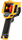
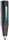

Поверка приборов неразрушающего контроля
- Услуга Стоимость
- Поверка тепловезора от 10000 руб.
- Поверка пирометра от 4000 руб.
- Поверка термометра от 3000 руб.
- Поверка склемометра от 1500 руб.
Поверка контрольно-измерительных приборов (КИП) — обязательная процедура, призванная убедиться в точности измерений, соответствующей паспорту прибора. Такая процедура требует наличия специального оборудования и выполняется согласно требованиям метрологии, утверждённой Госстандартом.
Не следует путать поверки КИП с испытаниями на соответствие типу СИ — это разные мероприятия. Заменить друг друга эти процедуры не могут. Например, прибор, по всем требованиям отвечающий своему типу средств измерений, может давать неверные результаты из-за внутреннего повреждения после удара или падения.
Виды поверок и сроки их проведения
Поверка приборов КИП должна производиться:
| Первичная поверка | при выпуске от производителя, после ремонта или при поставке по импорту |
| Периодическая поверка | регулярно, через установленный межповерочный интервал - на всех измерителях в процессе их эксплуатации и хранения |
| Внеочередная поверка | в случае некорректной работы, при повреждении имеющегося на корпусе поверочного клейма или утраты свидетельства – для приборов, у которых клеймо не наносится, после проведения юстировок и настроек |
| Инспекционная поверка | по требованию органов метрологического надзора для проверки пригодности к применению или в рамках экспертизы (по решению суда, требованию прокуратуры и пр.) |
Выбирая контрольно-измерительный прибор для профессиональных нужд, вы можете сразу купить устройство, прошедшее поверку и обладающее соответствующими документами. Если вы приобрели измеритель, не прошедший поверку, можете обратиться в наш сервисный центр.
Кто должен поверять КИП?
Поверка контрольно-измерительных приборов может выполняться не только органами Государственной метрологической службы, но и аккредитованными ею субъектами.
Не забывайте, что следить за соблюдением сроков поверки КИП должен владелец оборудования. Для этого следует составлять и вести соответствующие документы.
Как производится поверка КИП?
При проведении поверки контрольно-измерительных приборов фиксируются нормируемые параметры для конкретного типа измерителей, проверяется соответствие их метрологических и технических характеристик. Для этого используются соответствующие меры, эталонные приборы и другие средства.
Для каждого прибора существует документ, утверждённый Федеральным агентством по тех. регулированию и метрологии, в котором содержится:
- Методика поверки КИП.
- Необходимое оборудование для поверки.
- Межповерочный интервал.
На первоначальном этапе выполнения поверок КИП производится его внешний осмотр и опробование. Это позволяет оценить исправность и работоспособность измерителя. При необходимости, в зависимости от типа КИП, выполняется проверка параметров, обеспечивающих безопасность использования инструмента.
На основном этапе поверки контрольно-измерительного прибора исследуются метрологические качества. При этом с его помощью выполняется серия измерений заведомо известных величин на всех диапазонах. Контроль осуществляется по показаниям образцового измерителя напрямую, с использованием компаратора, или же используется эталонная мера. В процессе измерений осуществляется контроль отклонения от нуля поверяемого прибора. По полученным результатам определяется величина вариации показаний и вычисляется предельный показатель допускаемой погрешности.
При положительных результатах поверки вы получите на руки свидетельство об успешном прохождении процедуры и соответствующее клеймо. При неудовлетворительных результатах клеймо предыдущей поверки гасится и будет выписано свидетельство о непригодности КИП к применению. Протоколы поверки сохраняются у поверителя и, при необходимости, вы можете получить их копию. Заказать поверку КИП в нашем сервисном центре будет своевременным решением, способным уберечь вас от досадных ошибок в измерениях.